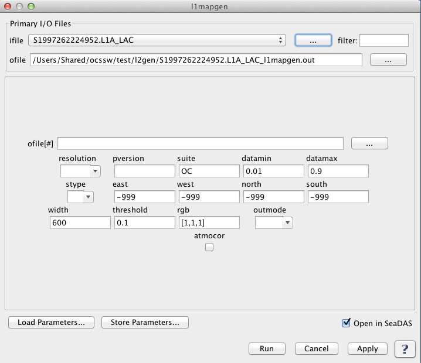

l1mapgen
Creates a Level 1 mapped image (pseudo true color - RGB) image
Location
Details
Command Line Usage
Location
Tools -> OCSSW Processing -> l1mapgen
Details
l1mapgen creates a Level 1 mapped image. The following image shows the default GUI for l1mapgen.
l1mapgen GUI without GEOFILE
|  |
When l1mapgen requires a geofile to create a level 1 mapped image, such as in the case of modis data,
the geofile gui element is dynamically added, as shown in the image below.
l1mapgen GUI with GEOFILE
 |
Arguments/Keywords
| UI Element Name |
Type |
Description |
Required/Optional |
Default Value |
| ifile |
Text Field |
Input Level-1A data product.
|
Required |
|
| geofile |
Text Field |
input L1 geolocation file name |
Conditional - MODIS only |
|
| ofile |
Text Field |
Output filename for generated Level-1B data product.
|
Required |
|
| ofile[#] |
Text Field |
additional output L2 file name |
Optional |
|
| resolution |
int |
processing resolution
-1: standard ocean 1km processing
1000: 1km resolution including aggregated 250 and 500m land bands
500: 500m resolution including aggregated 250 land bands and replication for lower resolution bands
250: 250m resolution with replication for lower resolution bands
|
Conditional - Required for processing MODIS products |
-1 |
| pversion |
Text Field |
processing version string |
Optional |
Unspecified |
| suite |
Text Field |
product suite string for loading suite-specific defaults |
Optional |
OC |
| north |
float |
north boundary |
Optional |
-999 |
| south |
float |
south bounday |
Optional |
-999 |
| east |
float |
east boundary |
Optional |
-999 |
| west |
float |
west bounday |
Optional |
-999 |
| width |
int |
width of output image |
Optional |
600 |
| threshold |
float |
threshold for the number of good pixels before an image is produced |
Optional |
0.1 |
| rgb |
int |
bands to use for red, green and blue |
Optional |
[1,1,1] |
| datamin |
float |
minimum reflectance for scaling |
Optional |
0.01 |
| datamax |
float |
maximum reflectance for scaling |
Optional |
0.9 |
| stype |
int |
scaling type:
0: log
1: linear
|
Optional |
0 |
| outmode |
int |
defines output format:
0: PPM
1: PNG
2: GeoTIFF
|
Optional |
0 |
| atmocor |
boolean |
toggle atmospheric correction |
Optional |
on |
Actions/Buttons
| UI Element Name |
Type |
Description |
| Browser Button |
Button |
Selects infile/ofile
|
| Load Parameters ... |
Button |
Reads in previously saved parameters and populates the fields in
GUI.
|
| Save Parameters ... |
Button |
Saves the current arguments in GUI in a file.
|
| Run |
Button |
Executes the l1mapgen command with arguments provided in the UI.
|
| Cancel |
Button |
Closes current processor GUI.
|
| Apply |
Button |
Makes current arguments effective.
|
| Open in SeaDAS |
Checkbox |
If selected, the ofile will be added to the open products list right after its generation.
|
| ? |
Button |
Displays the help content of the current command.
|
Command Line Usage
Usage: l1mapgen argument-list
The argument-list is a set of keyword=value pairs. The arguments can
be specified on the commandline, or put into a parameter file, or the
two methods can be used together, with commandline over-riding.
The list of valid keywords follows:
-help (boolean) (alias=-h,--help) (default=false) = print usage information
-version (boolean) (alias=--version) (default=false) = print the version
information
-dump_options (boolean) (alias=--dump_options) (default=false) = print
information about each option
-dump_options_paramfile (ofile) (alias=--dump_options_paramfile) = print
information about each option to paramfile
-dump_options_xmlfile (ofile) (alias=--dump_options_xmlfile) = print
information about each option to XML file
par (ifile) = input parameter file
pversion (string) (default=Unspecified) = processing version string
suite (string) (default=OC) = product suite string for loading
suite-specific defaults
ifile (ifile) (alias=ifile1) = input L1 file name
geofile (ifile) = input L1 geolocation file name (MODIS only)
resolution (int) (default=-1) = processing resolution (MODIS only)
-1: standard ocean 1km processing
1000: 1km resolution including aggregated 250 and 500m land bands
500: 500m resolution including aggregated 250 land bands and
replication for lower resolution bands
250: 250m resolution with replication for lower resolution bands
ofile (ofile) (alias=ofile1) (default=output) = output L2 file #1 name, output vicarious L1B
for inverse mode
ofile[#] = additional output L2 file name
north (float) (default=-999) = north boundary
south (float) (default=-999) = south boundary
east (float) (default=-999) = east boundary
west (float) (default=-999) = west boundary
width (int) (default=600) = width of output image
threshold (float) (default=0.1) = threshold for the number of good pixels before an image is produced
rgb (int) (default=[1,1,1]) = bands to use for red, green and blue
datamin (float) (default=0.01) = minimum reflectance for scaling
datamax (float) (default=0.9) = maximum reflectance for scaling
stype (int) (default=0) = scaling type
0: log
1: linear
outmode (int) (default=0) = defines output format
0: PPM
1: PNG
2: GeoTIFF